**Google vient de déployer la version 2.1 de son modèle de génération d'images, Nano Banana, venant remplacer la version 2 sur ses plateformes phares telles que Gemini et Google Flow, tout en devenant accessible via l'API de Gemini. À travers cette mise à jour, l'entreprise ambitionne d'apporter des corrections bienvenues sur les artefacts visuels, de consolider la gestion multimodale et de perfectionner la mise en page textuelle.**
**Pour mesurer la portée de ces évolutions, le créateur propose une batterie de tests comparatifs poussés face à la version 2.0 et face à la concurrence (notamment GPT Image 2.5 Sunburst via API). Si les résultats sur les styles textuels ou le photoréalisme relèvent davantage de l'ajustement incrémental que de la révolution technologique, des progrès notables se distinguent nettement dans l'intégration d'images de référence multiples, la cohérence des compositions et l'édition conversationnelle.**
**L'analyse met également en lumière les nouvelles synergies déployées au sein de l'écosystème Google, à l'instar de la fonctionnalité « Demander à Studio » intégrée directement à l'interface YouTube pour automatiser la création de miniatures contextuelles. En conclusion, bien que cette mouture 2.1 prépare le terrain aux prochaines grandes annonces attendues autour de Gemini 4 Argon, elle s'impose d'ores et déjà comme un outil de choix hautement performant, en particulier pour la conception d'infographies complexes en français.**
Google met à jour son modèle d'image, Nano Banana passe à la version 2.1. Une nouvelle version qui va remplacer Nano Banana 2 sur Gemini ou encore Google Flow et qui sera aussi disponible via l'API de Gemini. Donc pour y avoir accès via Google Gemini c'est très très simple, il suffira de créer une image, ça sera automatiquement ce nouveau modèle qui sera utilisé.
Interface & Outils : Navigateur web affichant la documentation DeepMind et l'interface de Google Gemini.
Contenu textuel & Code : Texte de présentation de Nano Banana 2.1, liste des canaux de distribution (Application Gemini, Google AI Studio, API Gemini, Google Flow, etc.), et interface de génération d'images avec un visuel de chalutier.
Action / Démonstration : Le créateur présente les nouveautés de la mise à jour Nano Banana 2.1, montre sa documentation officielle et l'interface de génération sur Gemini.
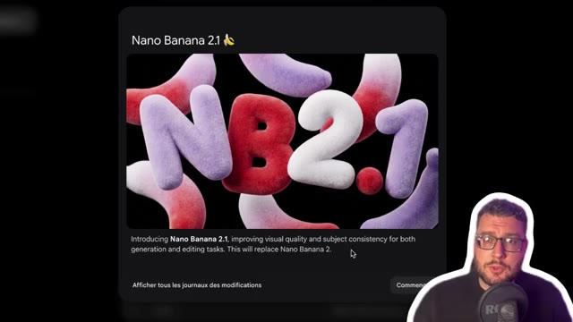
🔍 Agrandir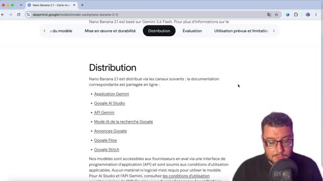
🔍 Agrandir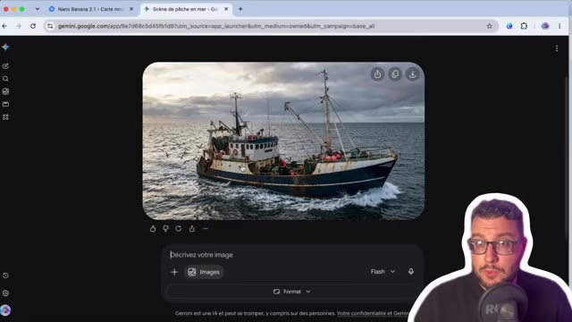
🔍 AgrandirLa même chose en se rendant sur Google Flow. Alors, ce nouveau modèle, on nous annonce une légère évolution par rapport au précédent Google Nano Banana 2. Que ça soit dans le texte ou image, ou dans l'utilisation de référence, ou dans ses capacités d'édition, on voit à chaque fois sur les différentes catégories une légère amélioration, même si ce n'est pas un grand bond en avant.
Interface & Outils : Navigateur web, interface Google Flow et site de documentation Google DeepMind.
Contenu textuel & Code : Menus de sélection de modèles IA (Nano Banana Pro, Nano Banana 2 Lite, Nano Banana 2.1) et tableaux de scores d'évaluation des performances.
Action / Démonstration : Le créateur navigue entre l'interface de génération et les cartes de modèles de Google DeepMind pour analyser les performances.
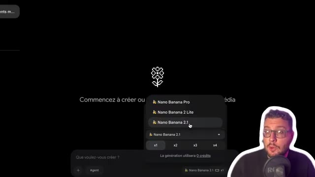
🔍 Agrandir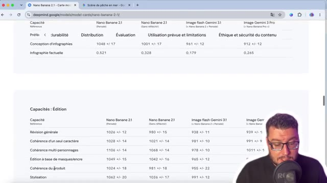
🔍 Agrandir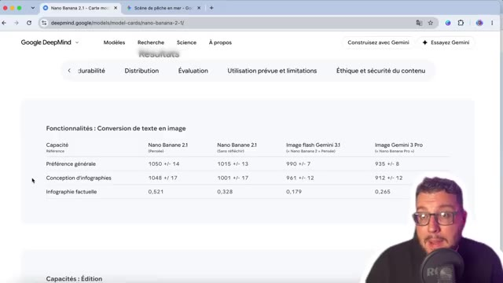
🔍 AgrandirDu coup, j'ai voulu voir un petit peu ce qui changeait de mon côté. Une des premières bonnes nouvelles, c'est dans sa capacité d'édition à travers la même conversation. Par exemple, ici avec Google Flow, où on est passé d'une image, ici la voiture jaune dans un ciel bleu, avec la modification de la voiture en rouge, le changement du ciel pour que ça soit la nuit, l'ajout d'une caravane à la voiture.
Interface & Outils : Interface web de Google Flow (navigateur Google Chrome).
Contenu textuel & Code : URL Google Flow, images générées de voiture volante, barres de prompts et historique des modifications.
Action / Démonstration : Le présentateur montre l'historique des modifications d'une image étape par étape dans Google Flow.
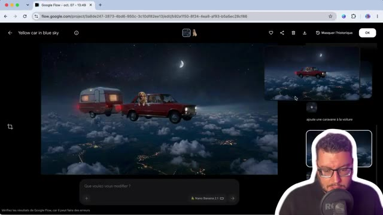
🔍 Agrandir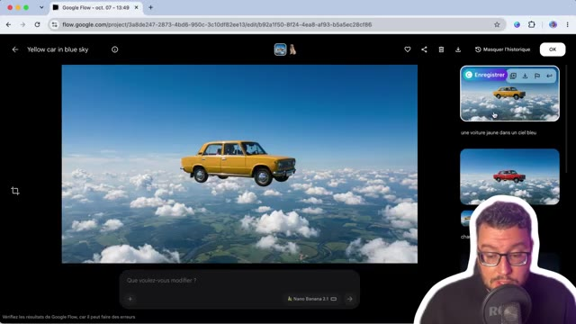
🔍 Agrandir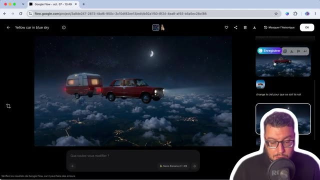
🔍 AgrandirOn voit qu'à chaque fois, on a la même cohérence et la qualité qui a été préservée à travers les différents designs. Ensuite, j'ai continué l'exercice en voulant ajouter ici une image référence extérieure, donc celle du chien, en indiquant que celui-ci sort la tête de la fenêtre. Là, par contre, le résultat est un petit peu moins bien, malgré le fait que le prompt a été compris perd tout de suite en réalisme.
Interface & Outils : Navigateur web (Google Chrome) avec l'interface de Google Flow.
Contenu textuel & Code : URL de Google Flow, interface web du générateur d'images/vidéos montrant un résultat visuel avec une voiture rouge tractant une caravane, volant dans un ciel étoilé au-dessus des nuages, avec un chien qui passe la tête par la fenêtre.
Action / Démonstration : Le créateur montre le résultat de l'ajout d'une image référence extérieure (le chien) dans Google Flow, en précisant que le résultat est un peu moins bien.
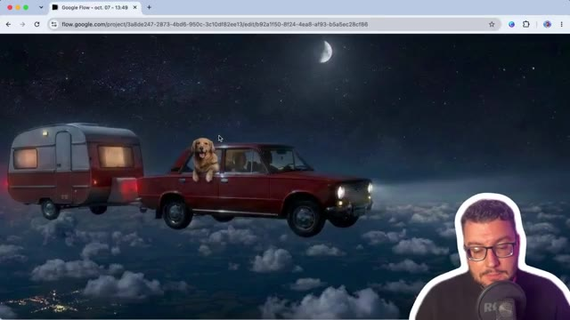
🔍 AgrandirD'ailleurs si on va en détail dans la documentation les nouveautés qui sont mises en avant c'est une qualité visuelle et un réalisme amélioré pour les sorties que ce soit en 1K jusqu'à la 4K une correction des artefacts une amélioration du rang du texte surtout sur la mise en page d'infographie la fusion jusqu'à 14 images référence donc 4 personnages et 10 objets un ancrage à la recherche web et aux images de Google et un niveau de réflexion configurable donc minimum, médium et par défaut.
Interface & Outils : Navigateur web affichant la documentation technique de Gemini API (Google AI Studio).
Contenu textuel & Code : Texte descriptif de "Gemini Nano Banana 2.1" détaillant les résolutions 1K à 4K, la correction d'artefacts, le rendu du texte et la fusion d'images.
Action / Démonstration : Le créateur présente et commente en direct la documentation officielle des nouveautés de l'API Gemini.
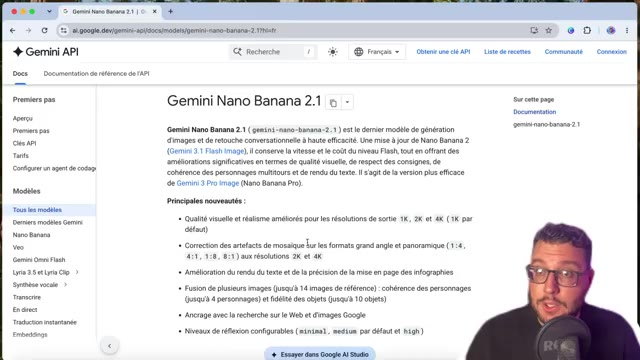
🔍 Agrandir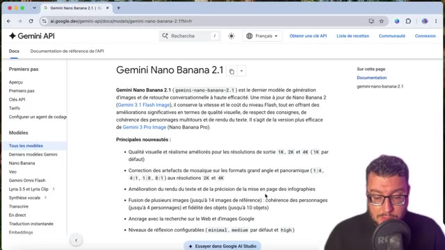
🔍 Agrandir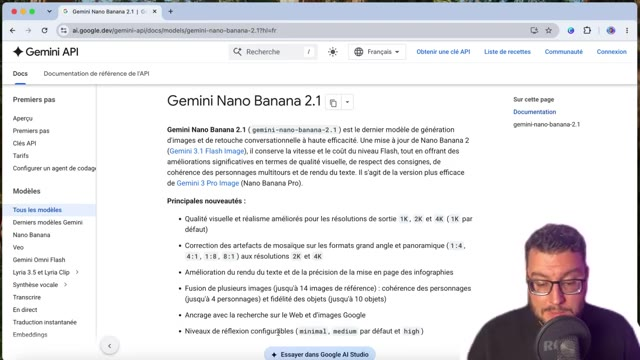
🔍 AgrandirOn va voir tout de suite maintenant avec des tests comparatifs. Et pour ça, je suis passé par la plateforme Xfield qui permet d'avoir les deux modèles en API. Donc tout d'abord, texte ou vidéo avec des prompts construits. Exemple ici avec un Jack Russell faisant du scooter. Ici donc, on est bien sur la version 2.1. Comparatif avec le même prompt sur la version 2.0.
Interface & Outils : Navigateur web, plateforme Higgsfield (higgsfield.ai)
Contenu textuel & Code : Panneau latéral affichant le prompt en anglais, modèle utilisé (Nano Banana 2.1 et Nano Banana 2), paramètres de taille et qualité, vidéo générée d'un Jack Russell en scooter.
Action / Démonstration : Comparaison côte à côte ou séquentielle entre les versions 2 et 2.1 du modèle de génération vidéo.
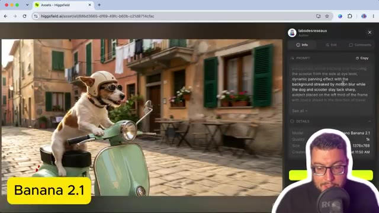
🔍 Agrandir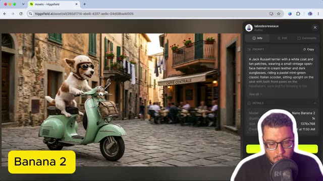
🔍 AgrandirOn voit qu'on a une qualité d'image similaire, mais peut-être une meilleure compréhension dans le sens où là on n'a pas le sentiment que le scooter est en mouvement malgré que l'arrière-plan est en flou et ici la scène donne plus de cohérence à noter aussi la lumière sur le poil du Jack Russell c'est un léger détail mais une image qui semble un tout petit peu supérieure j'ai voulu essayer aussi avec d'autres styles et surtout en ajoutant du texte puisque c'était une fonctionnalité qui était mise en avant donc ici on est sur 2.1 avec un étudiant qui doit copier au tableau je n'utiliserai pas l'IA dans un style animé
Interface & Outils : Navigateur web, plateforme Higgsfield.ai, incrustation vidéo du présentateur.
Contenu textuel & Code : URL de Higgsfield, vignette vidéo avec étiquette "Banana 2" et "Banana 2.1", panneau de prompt latéral détaillant les paramètres de génération.
Action / Démonstration : Le créateur compare deux générations de vidéos en analysant la qualité visuelle, la cohérence du mouvement et les détails.
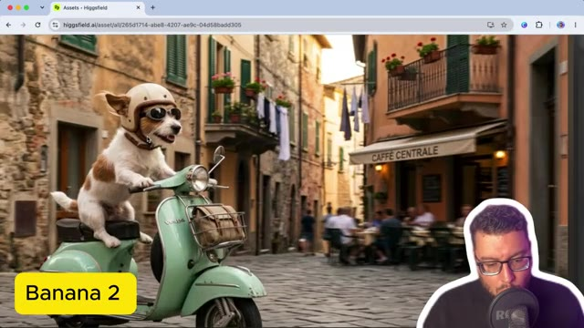
🔍 Agrandir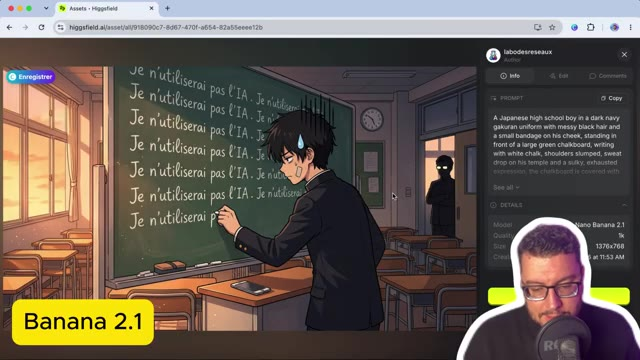
🔍 Agrandirla scène me convient sauf la place du tableau bien sûr puisqu'elle a été mis au milieu de la classe à noter qu'avec nano banana 2 on avait quelque chose qui était très bien aussi et peut-être même ici plus exploitable par rapport à vos 2.1 ici sur un style claymation en 2.1 avec un inspecteur qui interroge un serveur en fin de service là le détail qui me dérange un petit peu c'est l'inscription du café qui a été mal réalisé en arrière plan Par contre les détails de la scène derrière, on voit bien les tasses en fin de journée, le menu, la buée de fin de soirée avec l'éclairage, c'est pas trop mal.
Interface & Outils : Navigateur web, plateforme de génération d'images (Higgsfield AI), panneau latéral de prompts et détails techniques.
Contenu textuel & Code : Image de style claymation représentant un inspecteur de police interrogeant un serveur dans un café, prompt détaillé dans le panneau latéral, modèle "Nano Banana 2.1", résolution 1376x768.
Action / Démonstration : Présentation et analyse comparative d'une image générée avec le modèle Nano Banana 2.1 illustrant une scène de style claymation.
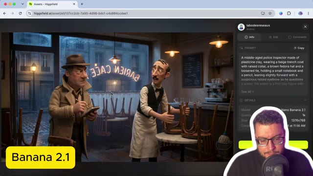
🔍 Agrandir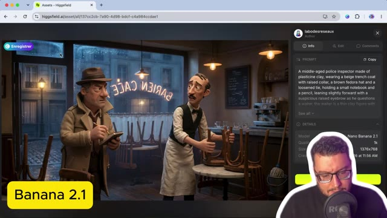
🔍 AgrandirMais encore une fois ici sur du 2.0, on voit vraiment pas trop la différence. Et même ici il a bien réussi à mettre le café même si au dessus c'est illisible. Pareil en termes de détails d'arrière-plan, aucun souci, ça se vaut. Pour du photoréalisme, ici on est sur Nano Banana 2. et là je voulais que le personnage principal boit un matcha et qu'à côté il y ait un journal qui dit l'automne sera doux.
Interface & Outils : Navigateur web affichant l'interface de Higgsfield AI (assets et détails de génération).
Contenu textuel & Code : Panneau de détails avec le modèle 'Nano Banana 2', le prompt textuel descriptif et l'image générée.
Action / Démonstration : Le créateur présente et analyse les résultats visuels obtenus avec le modèle d'IA Banana 2.
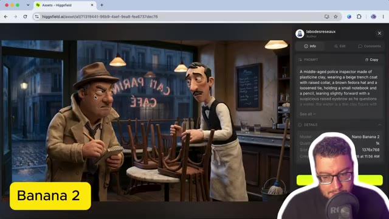
🔍 Agrandir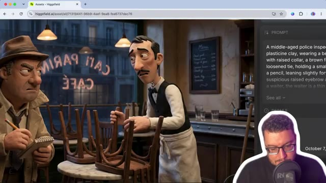
🔍 Agrandir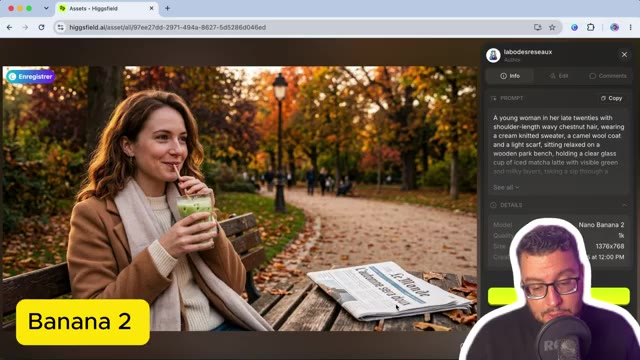
🔍 AgrandirLe problème c'est qu'ici on a un manque de cohérence puisque on ne sait pas où le banc commence et fini ou alors c'est une table, pas terrible. A noter qu'à chaque fois je fais seulement une seule génération et ça c'est sur Nano Banana 2.1 ou si le matcha latte est beaucoup plus respecté. Bon après sur la lumière c'est quasiment pareil par contre sur la mise en scène il a bien réussi à mettre le journal à côté.
Interface & Outils : Navigateur web affichant l'interface de Higgsfield AI (higgsfield.ai) avec un panneau latéral de détails et de prompt.
Contenu textuel & Code : Image générée d'une femme tenant un matcha latte sur un banc, panneau latéral affichant le prompt détaillé et les détails techniques (Modèle: Nano Banana 2.1, Dimensions: 1376x768). [DESC_IMAGE_2] Le créateur analyse l'image générée en soulignant la qualité du rendu du matcha latte et les défauts de cohérence du banc.
Action / Démonstration : Démonstration et mise en contexte pratique.
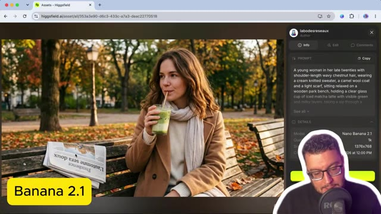
🔍 AgrandirPar contre, autant sur Nano Banana 2, j'avais le monde qui était indiqué. Ici, j'ai une marque de journal que je n'arrive pas à déchiffrer. Le titre est bien présent et c'est celui-ci qui était bien indiqué dans mon prompt. Donc texte ou image, on peut dire une très très légère évolution, pas une révolution. Par contre, il est annoncé que normalement, il est meilleur sur les images référence.
Interface & Outils : Navigateur web affichant la plateforme Higgsfield.ai
Contenu textuel & Code : Image générée avec texte lisible, interface latérale avec panneau 'Prompt' et détails du modèle 'Banana 2'.
Action / Démonstration : Le créateur analyse et compare le rendu textuel des images générées par les différentes versions d'IA.
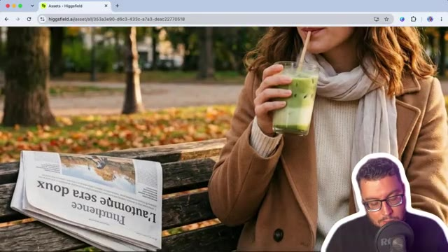
🔍 Agrandir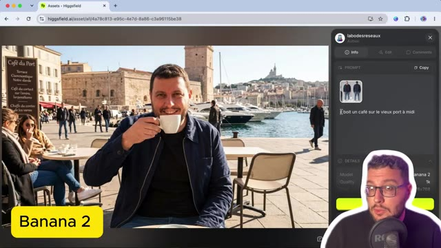
🔍 AgrandirOn a tenté avec un prompt simple et une image référence d'une fiche personnage, donc la mienne, d'indiquer il boit un café sur le Vioport à midi. En termes de visage sur les modèles de Google, on a toujours un petit souci. On a toujours ces petits détails qui s'ajoutent. Donc là par exemple, si on zoom, terrasse synaptotique notre d'arbre, il s'est embrouillé à vouloir en faire trop.
Interface & Outils : Navigateur web affichant la plateforme Higgsfield.ai (section Assets)
Contenu textuel & Code : Une image de référence de personnage (sheet) présentant quatre angles différents du créateur, avec un panneau latéral de détails (Source : Original Upload, Type : Image, Format : JPG).
Action / Démonstration : Le créateur présente sa propre fiche personnage utilisée comme image de référence pour tester la génération d'images par IA.
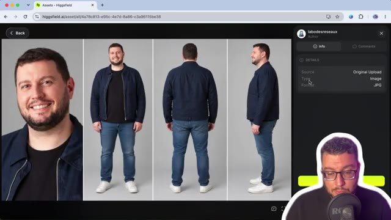
🔍 AgrandirLe même prompt cette fois-ci avec 2.1. Et là j'ai été agréablement surpris. Même si encore on n'a pas un visage référence qui est à 100%, la composition est beaucoup plus agréable. avec une mise en scène et puis une lumière de midi qui fait beaucoup plus naturel. Donc ici, avantage à 2.1. Et je n'ai pas pu me retenir comme on est sur de l'image référence. De comparer aussi avec GPT 2.5, ici j'ai pris le modèle API Sunburst.
Interface & Outils : Navigateur web affichant l'interface de la plateforme Higgsfield (higgsfield.ai) avec un panneau latéral de détails et de prompts, et l'incrustation vidéo du créateur en bas à droite.
Contenu textuel & Code : URL Higgsfield, panneaux "PROMPT" avec une image de référence (visage), texte du prompt "il boit un café sur le vieux port à midi", et encarts texte "Banana 2.1" et "GPT 2.5 Sunburst".
Action / Démonstration : Le créateur compare les rendus visuels générés par différents modèles d'IA (Banana 2.1 versus GPT 2.5 Sunburst) en commentant la qualité de la composition et de la lumière.
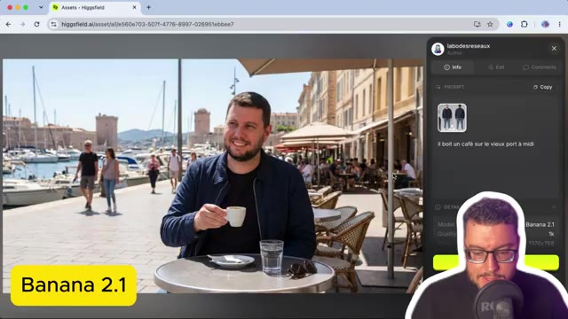
🔍 Agrandir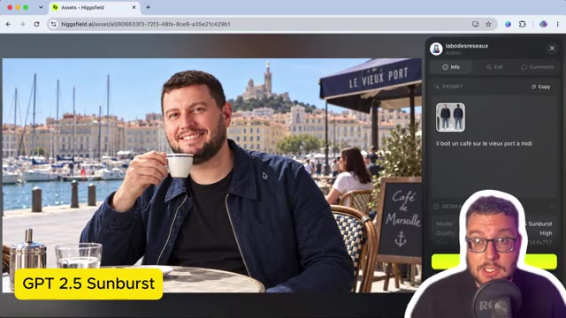
🔍 AgrandirLà, c'est vrai qu'en termes de référence visage, il est meilleur que les modèles Google. Et pareil en termes de texte, même si ici derrière, ça fait un petit peu IA, je n'ai pas de faute. Et donc pour de l'IA, j'ai un résultat quand même satisfaisant. Alors ensuite, on nous dit que le modèle est quand même plus intelligent et il arrive à comprendre mieux les consignes. Donc ici je l'ai testé dans une mise en situation, celle de la réalisation de la miniature de cette vidéo.
Interface & Outils : Navigateur web affichant la plateforme Higgsfield (higgsfield.ai).
Contenu textuel & Code : Image générée montrant un homme tenant deux bananes avec le texte 'Nano Banana 2.1' en arrière-plan, et un panneau latéral affichant le prompt textuel et les références d'images (@image 1, @image 2).
Action / Démonstration : Le créateur présente le résultat de la génération d'image avec l'intégration de texte et de visages cohérents.
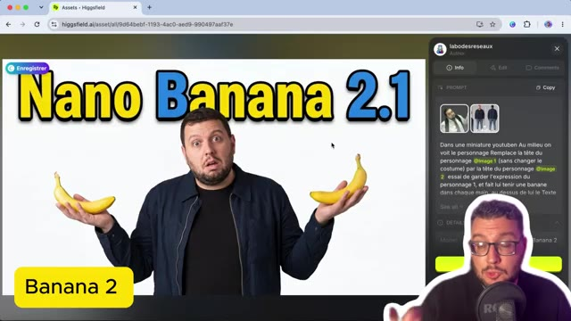
🔍 AgrandirEn commençant déjà par le modèle 2.0, donc le prompt dans une miniature YouTube, au milieu on voit le personnage, remplace la tête du personnage de l'image 1, pour la référence c'est David Goudeneuf, avec ma fiche caractère. Je ne veux pas qu'il change le costume, par contre il change la tête du personnage pour mettre celle du numéro 2, en essayant de garder l'expression du personnage 1, et en lui faisant tenir une banane dans chaque main avec le titre au-dessus, Nano Banana 2.1.
Interface & Outils : Présentation orale ou séquence sans interface partagée.
Contenu textuel & Code : Explications et conseils de création de contenu / IA.
Action / Démonstration : Démonstration et mise en contexte pratique.
On voit qu'avec Nano Banana 2, la consigne de garder le costume a pas été trop respectée. Pareil, les bananes pas trop sexy. La tête du personnage qui garde l'expression, ça va encore. Par contre, avec Nano Banana 2.1, on est un petit peu mieux, c'est-à-dire qu'on a bien le costume qui a été respecté et même en termes de composition, c'est beaucoup plus sympa.
Interface & Outils : Navigateur web affichant l'interface de l'outil Higgsfield AI.
Contenu textuel & Code : Image générée avec le texte "NANO BANANA 2.1", un panneau latéral affichant les images de référence (@image 1, @image 2) et le prompt textuel décrivant la composition.
Action / Démonstration : Le créateur présente le résultat visuel amélioré obtenu avec la version Nano Banana 2.1 par rapport à la version précédente.
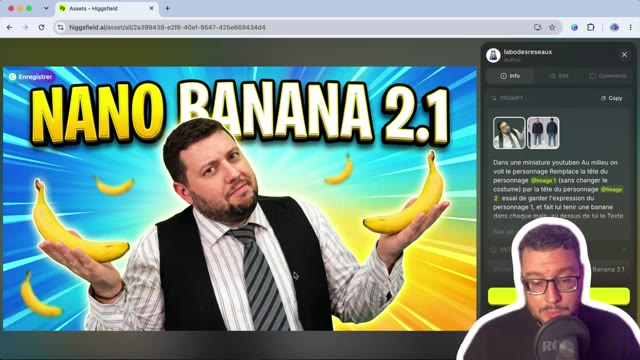
🔍 AgrandirSur la tête, on a un peu un mix entre les deux têtes. et je refais le test avec GPT-image 2.5, Sunburst, et je trouve que c'est le résultat le plus original et la composition la plus réussie. D'ailleurs, je pense que je mettrai les deux miniatures en AB testing et je pense que c'est celle-ci qui va ressortir sur le long terme. Ce modèle 2.1, il va être intéressant dans l'utilisation des autres outils de Google comme YouTube, où on voit, on a une nouveauté maintenant, c'est demander à Studio ici.
Interface & Outils : Navigateur web, Higgsfield, YouTube Studio
Contenu textuel & Code : Interface Higgsfield avec affichage d'une image générée (miniature YouTube 'Nano Banana 2.1') et d'un prompt textuel, ainsi que le tableau de bord YouTube Studio avec la liste des vidéos de la chaîne.
Action / Démonstration : Le créateur présente une miniature générée par IA sur Higgsfield et évoque l'utilisation de YouTube Studio pour les tests A/B.
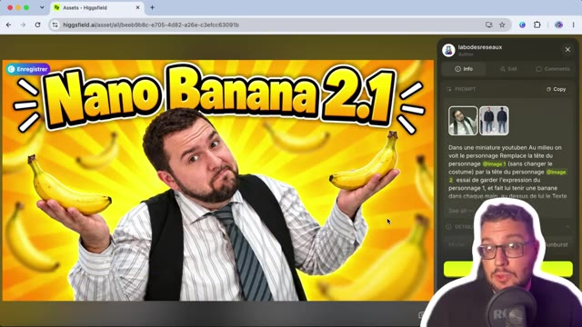
🔍 Agrandir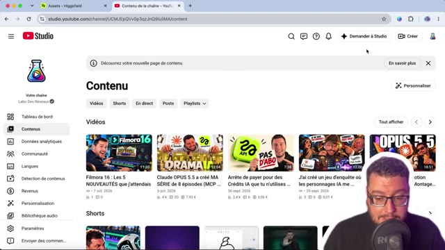
🔍 AgrandirEt par exemple, on peut demander de créer notre miniature pour notre vidéo YouTube directement depuis la plateforme. Donc en utilisant Studio, tu demandes « Génère une miniature pour ma dernière vidéo longue ». Et ce que je trouve intéressant, c'est qu'on va avoir YouTube qui va analyser notre dernière vidéo et qui va directement nous proposer une miniature en tenant compte de la composition de la vidéo.
Interface & Outils : YouTube Studio / Panneau latéral 'Demander à Studio'
Contenu textuel & Code : Prompt utilisateur « Génère une miniature pour ma dernière vidéo longue » et messages de l'assistant IA « Obtention des détails spécifiques pour cette vidéo... » puis « Création de styles de miniatures... »
Action / Démonstration : Le créateur utilise l'assistant IA intégré à YouTube Studio pour générer automatiquement une miniature basée sur sa dernière vidéo publiée.
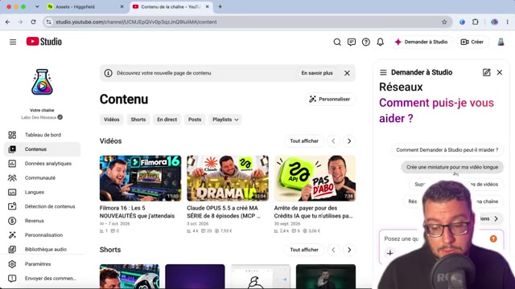
🔍 Agrandir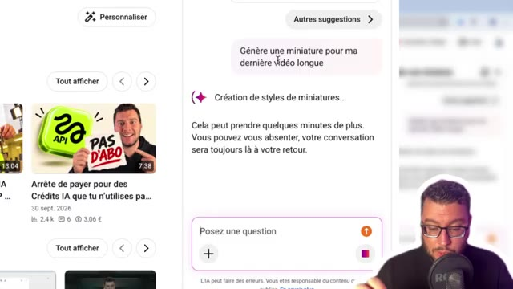
🔍 AgrandirDonc généralement, reprendre notre tête en image référence et le sujet de la vidéo pour nous proposer quelque chose, ça permet d'avoir des propositions toutes prêtes. Alors ça ne vaut pas encore une miniature qu'on a travaillée de notre côté, mais franchement il y a une évolution. donc bon ma tête est pas parfaite mais il a compris le sujet de ma dernière vidéo, il m'a marqué un titre, il m'a mis les logos, il m'a mis le personnage principal et moi qui explique comment j'ai créé une vidéo sur les backrooms, donc voilà pas encore parfait mais à noter que ça commence vraiment à s'améliorer du côté de Google et de YouTube et que bientôt peut-être on aura la possibilité de générer des miniatures de très bonne qualité en automatique depuis notre compte YouTube.
Interface & Outils : Interface de génération d'images et navigateur web.
Contenu textuel & Code : Miniature YouTube avec le texte « SÉRIE IA », un smartphone affichant un personnage, et le visage du youtubeur.
Action / Démonstration : Le créateur présente une proposition de miniature générée par intelligence artificielle en utilisant son image de référence.
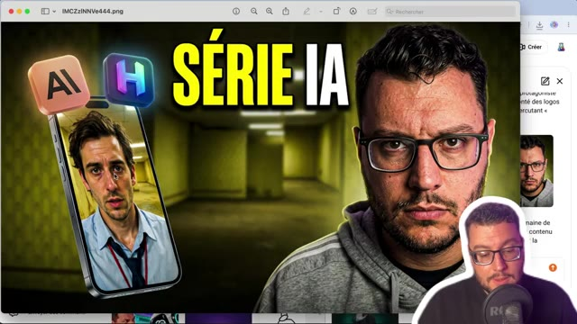
🔍 Agrandir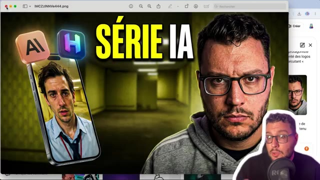
🔍 AgrandirRetour sur nos tests pour tester le maximum d'entrées. Donc ici avec les 14 entrées. 13 objets plus ma fiche personnage. Pour les mettre en scène dans une composition originale. Donc les 14 objets sont là. Après la composition, j'ai une tête un petit peu bizarre je trouve. Plus le fait d'avoir les tableaux à côté. Là on est sur Nano Banana 2. Ça c'est le résultat que j'ai eu avec GPT Image 2.5 Sunburst.
Interface & Outils : Navigateur web, plateforme Higgsfield AI (assets et interface de génération).
Contenu textuel & Code : Panneau latéral avec les miniatures des objets sources (pomme, extincteur, seau, etc.), le prompt "Met en scènes l'ensemble de ces images dans une composition originale", et le nom des modèles (Nano Banana 2, GPT 2.5 Sunburst).
Action / Démonstration : Le créateur présente et commente les résultats de tests de composition d'images intégrant 14 entrées différentes générées par différentes intelligences artificielles.
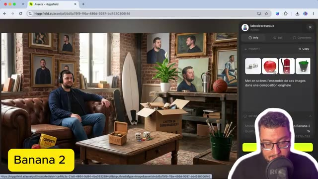
🔍 Agrandir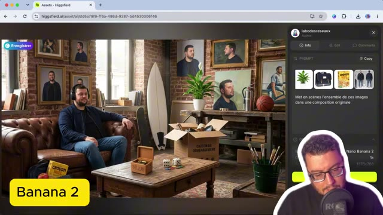
🔍 Agrandir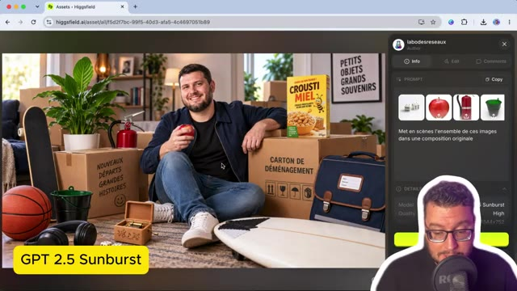
🔍 AgrandirOù la tête n'a pas du tout été prise en compte. Mais la composition, on voit encore que le modèle est très très fort. et sachant que lui il peut aller au delà de 14 images, et 2.1, encore une fois, le personnage n'est pas ressemblant à 100%, mais pour le coup ici la composition est beaucoup plus naturelle, vraiment pas trop mal. Et dernier exemple, là où Google annonce vraiment un gap, c'était sur tout ce qui était génération d'infographie, donc Nano Banana 2, ici sur une infographie sur la révolution française, on voit qu'il nous mélange le français et l'anglais, qu'on a quelque chose qui est pas terrible, ça c'est la version faite avec GPT Image 2.5 Sunburst,
Interface & Outils : Navigateur web, plateforme d'IA générative (Higgsfield), interface avec panneau de prompt latéral, webcam du présentateur.
Contenu textuel & Code : Infographies historiques sur la Révolution française, panneaux de paramètres de modèle d'IA (Model: Nano Banana 2 / GPT Image 2.5 Flare, Quality: High, dimensions 1376x768 et 1344x752), prompt : « Une infographie expliquant la révolution française ».
Action / Démonstration : Le créateur présente et compare différentes infographies générées par des modèles d'IA successifs, évaluant la qualité de leur composition et leur respect du sujet.
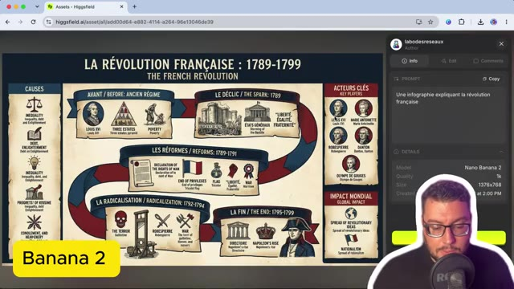
🔍 Agrandir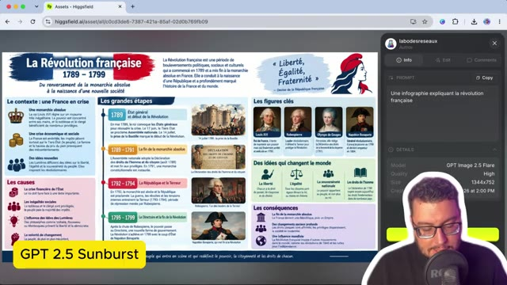
🔍 AgrandirTrès très complet, beaucoup de texte, peut-être un petit peu chargé mais au moins tout est là. Et ça c'est la version Nano Banana 2.1 et pour le coup je trouve vraiment pas mal. En termes de composition, en termes de lecture, tout est en français parfaitement, on n'a pas du mélange français-anglais. On a une logique qui est beaucoup plus claire donc vraiment à tester sur des infographies.
Interface & Outils : Interface web de génération d'images / infographies (plateforme type Higgsfield).
Contenu textuel & Code : Infographie historique détaillée sur "La Révolution Française (1789-1799)", prompt "Une infographie expliquant la révolution française", paramètres du modèle (Nano Banana 2.1).
Action / Démonstration : Le créateur présente et analyse l'infographie générée, soulignant la qualité du texte en français et la composition.
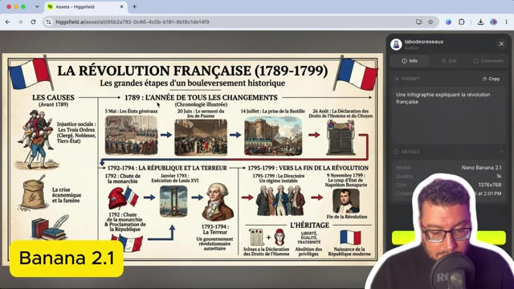
🔍 Agrandir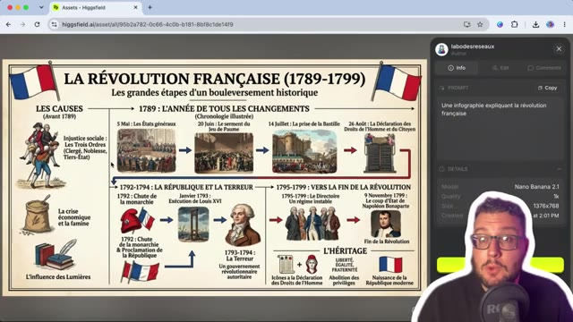
🔍 AgrandirJe pense que c'est là que le modèle va prendre tout son sens et sera le meilleur. Voilà pour cette petite mise à jour. C'est un petit peu comme ce qu'on a eu avec le modèle vidéo Omni Flash 1.1. On est vraiment sur du léger ajustement. En attendant, je pense, les grosses annonces de Google et notamment Gemini 4 Argon qui devrait arriver prochainement accompagné de belles promesses.
Interface & Outils : Navigateur web affichant le blog officiel de Google.
Contenu textuel & Code : Article intitulé "Gemini 4 Argon : notre prochaine ère d'intelligence de pointe".
Action / Démonstration : Le présentateur commente l'annonce future de Gemini 4 Argon sur Google.
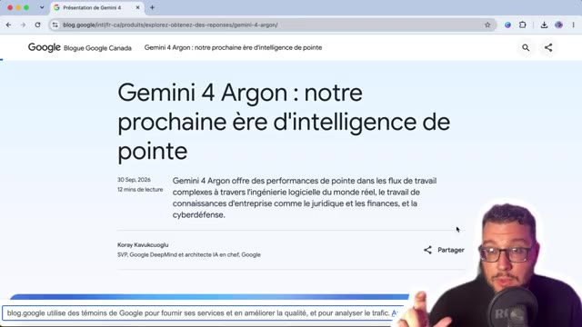
🔍 Agrandir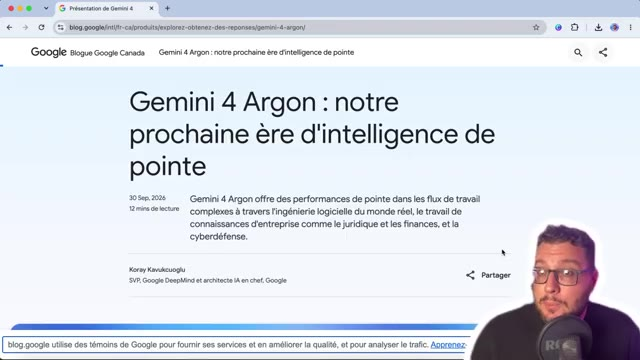
🔍 AgrandirMerci d'avoir suivi cette vidéo. C'était Marco. Je te dis à très bientôt sur le Labo des Réseaux pour d'autres tutos.
Interface & Outils : Présentation orale ou séquence sans interface partagée.
Contenu textuel & Code : Explications et conseils de création de contenu / IA.
Action / Démonstration : Démonstration et mise en contexte pratique.